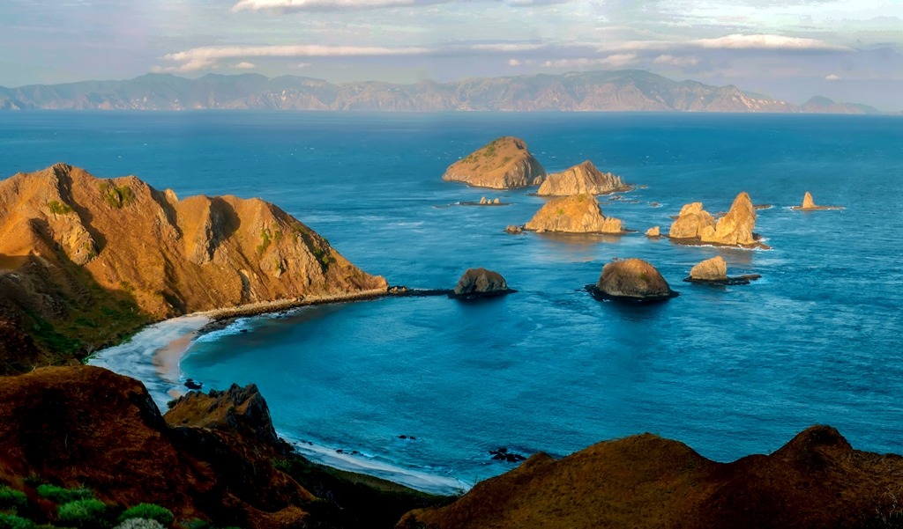

PULAU KELAPA

Pulau Kelapa menjadi salah satu surga keindahan di Bima Nusa Tenggara yang rekomended untuk anda explore keindahannya. Liburan di Kabupaten Bima NTB, traveler tidak akan kesulitan mencari obyek wisata alam yang rekomended untuk dikunjungi. Salah satu pesona terbaik di NTB yang siap menemani perjalanan liburan berkualitas anda yaitu Pulau Kelapa dengan sajian alamnya. Pesona alam Indonesia yang luar biasa menyimpan hidden gems di timur yang menakjubkan dengan sajian terbaiknya. Melawat ke Bima Nusa Tenggara Barat, jangan lupa lawati Pulau Kelapa bersama orang tersayang dan explore keindahannya. Refresh jiwa dengan sajian panorama terbaik dan spot anti mainstream yang ditawarkan destinasi Kelapa Island NTB. Saat anda berencanca untuk liburan di Pulau Kelapa, harga tiket masuknya masih free alias gratis. Destinasi pulau Kelapa menjadi salah satu tempat wisata populer di Bima NTB yang selalu ramai akan traveler setiap harinya.
Saat anda berencana untuk menghabiskan hari libur di Pulau Kelapa Bima, traveler harus menyeberang menggunakan perahu.
Untuk lokasinya sendiri, Pulau Kelapa beralamat di Nggelu, Lambu, Kabupaten Bima, Nusa Tenggara Barat Namun, untuk sampai ke lokasi Pulau Kelapa, traveler harus menyeberang menggunakan perahu wisata.
Sedangkan untuk biaya sewa kapal menuju Pulau Kelapa Nusa Tenggara Barat sendiri yaitu Rp.300.000 – Rp.350.000/orang untuk tiket pulang pergi.
GUNUNG TAMBORA
Indonesia terkenal memiliki gunung berapi yang masih aktif. Namun, ternyata gunung-gunung tersebut menyimpan beberapa keindahan alam yang masih sangat asri dan akan disayangkan jika anda lewatkan. Salah satunya ialah wisata Gunung Tambora di Kabupaten Bima, Pulau Sumbawa, Nusa Tenggara Barat. Gunung Tambora adalah salah satu gunung yang cukup terkenal di kalangan para pendaki baik dari Indonesia maupun dari manca negara. Gunung Tambora menjadi destinasi wajib bagi para pecinta wisata ketinggian.
Dengan ketinggian 2.851 meter di atas permukaan laut, gunung ini menyimpan keindahan alam yang sangat menakjubkan. Dengan susah payah anda mendaki, takkan pulang dengan tangan hampa. karena pesona alam yang ada di Gunung Tambora terbilang unik. Gunung ini dijuluki sebagai gunung dengan kawah terbesar di Indonesia atau biasa di sebut dengan the Greatest Crater In Indonesia. Kawah di gunung ini mempunyai lebar 7 kilometer, dengan keliling 18 kilometer dan kedalaman 800 meter.
Selain itu, Gunung Tambora juga mempunyai keindahan alam lainnya yang tak kalah menakjubkan. Disini terdapat padang pasir yang sangat luas yang berada di sepanjang bibir kawah gunung ini. Di sepanjang bibir kawah juga ditumbuhi oleh bunga edelweiss yang tumbuh dengan berjauhan sekitar 1,5 meter sampai 100 meter. Ditambah dengan batuan-batuan berlapis yang sangat indah. Batu-batu berlapis tersebut bagian atasnya datar seperti meja yang membuat fenomena alam tersendiri. Yang membuat menarik, dari gunung ini anda bisa melihat keindahan lautan, kawah, pulau satonda dan juga padang pasir yang sangat indah.
GILI TRAWANGAN
Gili Trawangan adalah nama salah satu pulau yang ada di Lombok, Nusa Tenggara Barat. Pulau ini masuk dalam salah satu pulau di Desa Gili Indah yang memiliki keindahan bawah alam laut super indah. Traveling ke Gili Trawangan, Anda tidak hanya bisa melihat keindahan terumbu karang dan ikannya yang berwarna-warni, tetapi juga fenomena alamnya. Benar, Gili Trawangan memiliki tempat untuk melihat sunset paling cantik, yaitu Pantai Barat Gili Trawangan.
Pantai ini selalu ramai dikunjungi wisatawan yang ingin melihat sang surya kembali ke peraduan. Dengan berlatarkan Gunung Agung, langit yang awalnya berwarna biru bersih, perlahan berubah warna menjadi kuning kemerahan.
Datanglah ke Pantai Barat sekitar pukul 17.00 Wita bersama teman-teman. Sambil mendengarkan musik dan duduk santai di pinggir pantai, lihatlah bagaimana bagaimana Sang Surya kembali ke persembunyian secara perlahan. Seperti cahaya surgawi menghias lembayung yang jingga.
Langit yang awalnya tampak biru cerah, perlahan memerah. Matahari pun tampak turun perlahan dan menghilang menyisakan kegelapan. Di balik awan putih, temukan Sang Surya dan tangkap dengan kamera Anda. Sempurna!
Jangan langsung beranjak dari tempat duduk Anda setelah matahari tenggelam sempurna. Biarkan angin malam pantai membelai lembut rambut dan nikmati kehadiran bintang yang menghiasi langit Gili Trawangan.